Group pulse, members and their week, invites. 7 in use. Rendered from Storybook on the app background (#f4f4f4). Generated by tools/build-canvases.js; do not edit by hand.
Invite by email. One overlay, two presentations, through the chassis' ResponsiveSheet: a bottom sheet on phone, a 560px centred modal on tablet and desktop (the per-page width exception the chassis allows).
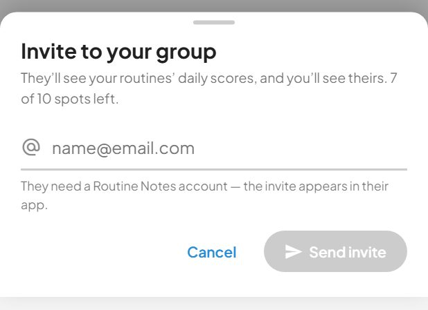
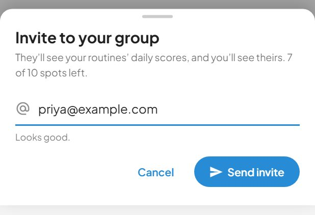
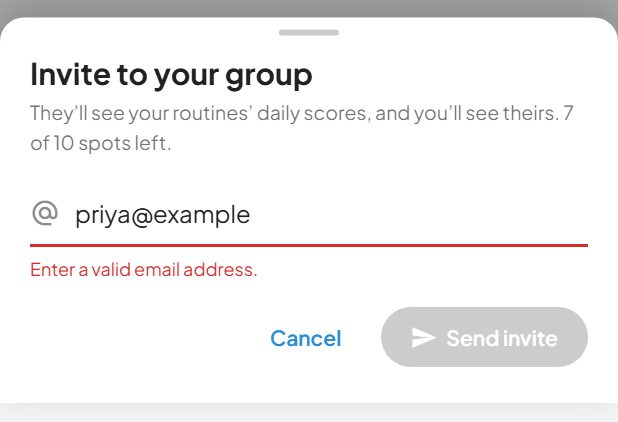
Someone has invited you into their group. Accepting leaves the group you are in now, which is why the card says so under the buttons rather than in a toast after the fact.
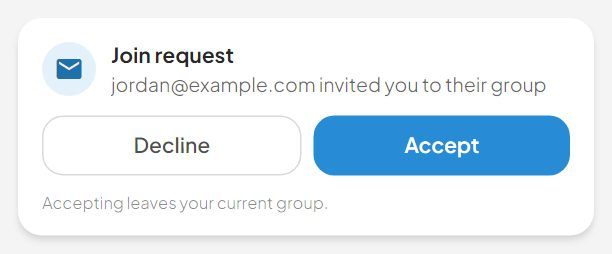
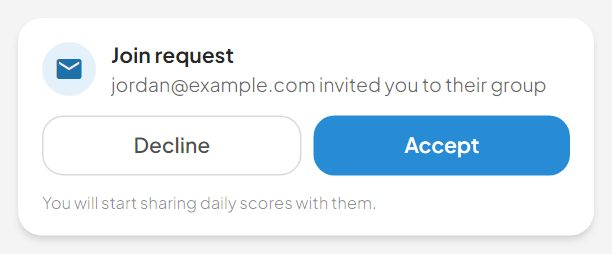
Leaving the group, confirmed in a real sheet.
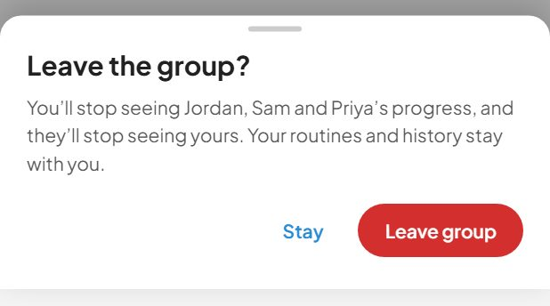
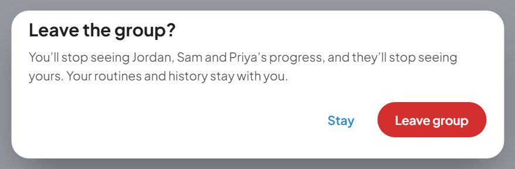
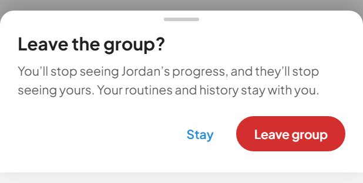
The members card: a header, the member rows (passed in through the default slot so each one can own its own read), the pending-invite rows, and the in-list "Invite someone" row that dims and relabels when the group is full.
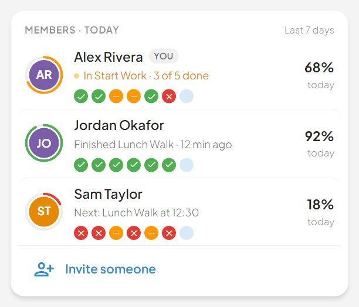
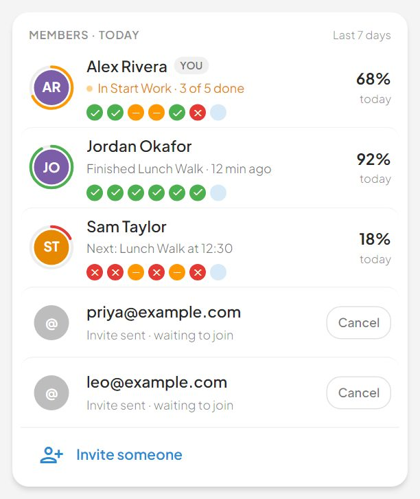
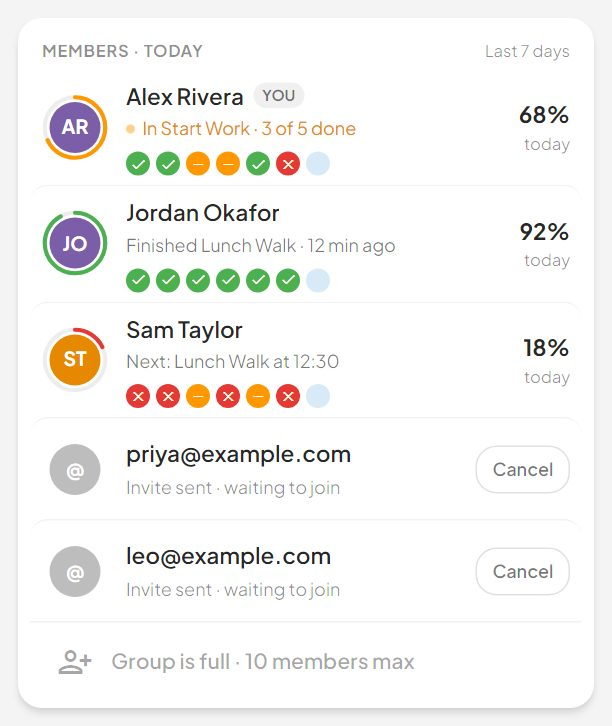
One row of the Groups member list.
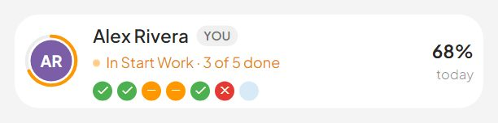
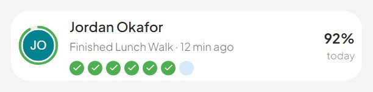
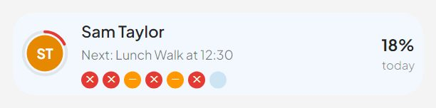
One member's week: three stat tiles and a routines x days grid.
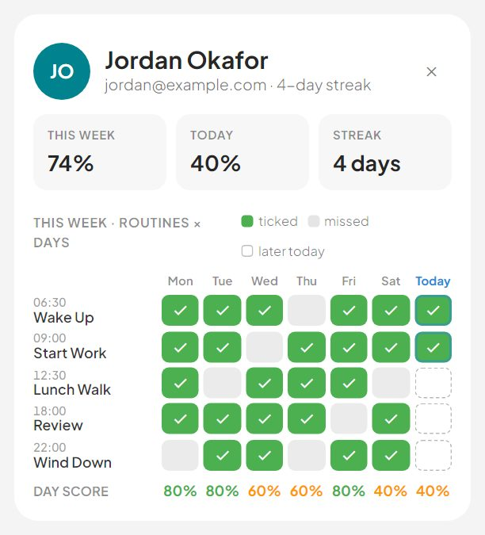
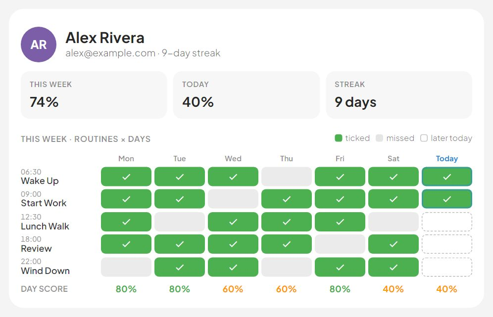
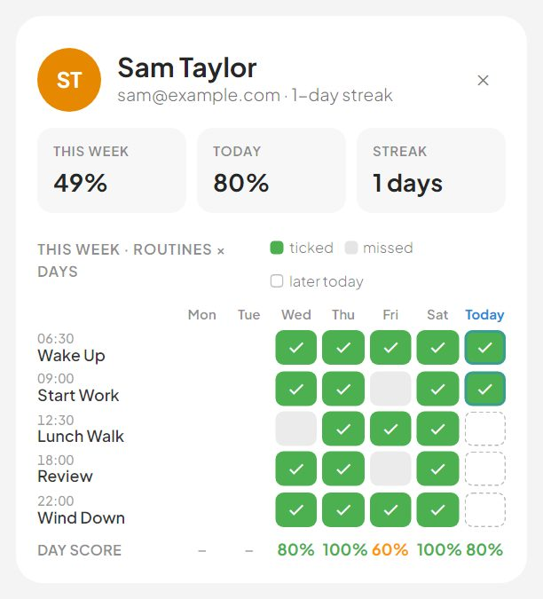
The group pulse — what replaced the forest stock photo and its member count (Groups.dc.html § "What changed from FamilyRoutine.vue").
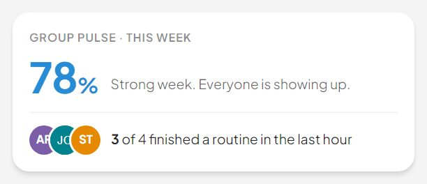
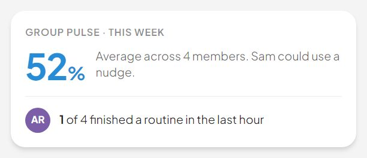
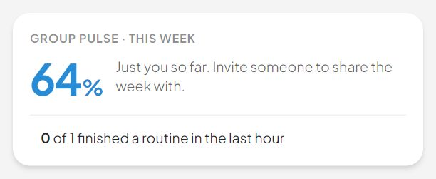